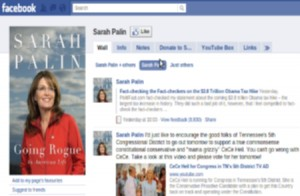

<?xml version="1.0" encoding="UTF-8"?>
<rss version="2.0"
	xmlns:content="http://purl.org/rss/1.0/modules/content/"
	xmlns:wfw="http://wellformedweb.org/CommentAPI/"
	xmlns:dc="http://purl.org/dc/elements/1.1/"
	xmlns:atom="http://www.w3.org/2005/Atom"
	xmlns:sy="http://purl.org/rss/1.0/modules/syndication/"
	xmlns:slash="http://purl.org/rss/1.0/modules/slash/"
	>

<channel>
	<title>Chronosynclastic Infundibulum &#187; networking</title>
	<atom:link href="http://www.semanticoverload.com/category/networking/feed/" rel="self" type="application/rss+xml" />
	<link>http://www.semanticoverload.com</link>
	<description>The world through my prisms</description>
	<lastBuildDate>Thu, 07 Apr 2011 17:36:17 +0000</lastBuildDate>
	<language>en-US</language>
	<sy:updatePeriod>hourly</sy:updatePeriod>
	<sy:updateFrequency>1</sy:updateFrequency>
	<generator>http://wordpress.org/?v=3.5</generator>
		<item>
		<title>On the maturation of social media</title>
		<link>http://www.semanticoverload.com/2010/08/10/social-media-maturation/</link>
		<comments>http://www.semanticoverload.com/2010/08/10/social-media-maturation/#comments</comments>
		<pubDate>Wed, 11 Aug 2010 00:51:16 +0000</pubDate>
		<dc:creator>Semantic Overload</dc:creator>
				<category><![CDATA[internet]]></category>
		<category><![CDATA[networking]]></category>
		<category><![CDATA[rant]]></category>
		<category><![CDATA[technology]]></category>
		<category><![CDATA[beanie babies]]></category>
		<category><![CDATA[blog]]></category>
		<category><![CDATA[digg]]></category>
		<category><![CDATA[newsweek]]></category>
		<category><![CDATA[slinky]]></category>
		<category><![CDATA[social media]]></category>
		<category><![CDATA[social networking]]></category>
		<category><![CDATA[technorati]]></category>

		<guid isPermaLink="false">http://www.semanticoverload.com/?p=659</guid>
		<description><![CDATA[In this recent article, Newsweek claims that traditional social media like blogs and upcoming ones like twitter are on the decline because we as a people are simply too lazy and wouldn&#8217;t do something for free [hat tip: Patrix]. Newsweek has really embarrassed itself with this post. Let me explain how. First, let us examine [...]]]></description>
				<content:encoded><![CDATA[<p>In this <a title="Newsweek article on decline of social media" href="http://www.newsweek.com/2010/08/09/take-this-blog-and-shove-it.html">recent article</a>, Newsweek claims that traditional social media like blogs and upcoming ones like twitter are on the decline because we as a people are simply too lazy and wouldn&#8217;t do something for free [hat tip: <a href="http://www.ipatrix.com/3605/the-beginning-of-the-end-for-citizen-journalism/">Patrix</a>]. Newsweek has really embarrassed itself with this post. Let me explain how.</p>
<p>First, let us examine the evidence that Newsweek provides for the decline in social media.</p>
<ol>
<li><a href="http://www.wikimedia.org/">Wikimedia</a>, after its prolific crowdsourced contribution to <a href="http://www.wikipedia.org/">wikipedia</a> until 2009 is now having to recruit contributors and editors.</li>
<li>According to <a href="http://technorati.com/">Technorati</a>, professional bloggers are on the rise whereas hobbyist loggers (like your truly) are on the decline. 95% of the blogs are abandoned in the first month. A recent Pew study found that blogging has withered as a pastime, with the number of 18- to 24-year-olds who identify themselves as bloggers declining by half between 2006 and 2009.</li>
<li>Although twitter is adding users at an astounding rate, 90% of tweets come from 10 percent of users, according to a 2009 Harvard study. Between 60 and 70 percent of people signing up for twitter quit within a month, according to a recent Nielsen report.</li>
<li>While <a href="http://www.digg.com">Digg</a> won readers, it struggled to sign up voters and has forced a change in format to something similar to social networking sites like facebook.</li>
</ol>
<p>Based on this evidence, the article concludes that (a) traditional social media and citizen journalism is on the decline (the only kind of social media that is rising is the one that allows people to connect with each other), and (b) the underlying reason for it is that people are lazy to do anything for free. Do you seen the disconnect in logic and reasoning here?</p>
<h3>Novelty Factor</h3>
<p>First, the author of the article chooses to completely ignore the &#8216;novelty&#8217; factor that we are all subject to. Remember <a href="http://en.wikipedia.org/wiki/Beanie_Baby">Beanie babies</a>? How about the <a href="http://en.wikipedia.org/wiki/Slinky">slinky</a>? They were wildly popular when they first came out, but not any more. Is that because people got too lazy to play with them? Of course not! It&#8217;s the novelty factor. When people see something new, it will pique their interest and exploring it is a reward unto itself. So people tend to use it to understand it. Once the novelty factor wears out, only the hardcore fans and professionals occupy the niche. It explains everything from the slinky and beanie babies to blogs and twitter. I am surprised that the article did not make that connection.</p>
<h3>Knowledge Generation and Gatekeepers</h3>
<p>Second, how is wikimedia&#8217;s recruiting professionals a bad thing, even for social media? Knowledge validity is not subject to democracy. Evolution does not become untrue simply because a majority of our population choose to be Bible thumpers. If wikimedia intends to be taken seriously as a repository of human knowledge, it needs gatekeepers and knowledge generation agents who are proficient in their respective areas and disciplines. This ensures that crowdsourced information and knowledge is validated before it pollutes the repository.</p>
<h3>Blogging Bubble</h3>
<p>Third, the article seems to assume that everyone who started a blog started it with the intention of generating information to be shared with everyone. This is simply not true (see my earlier point about the novelty factor). In fact, I will hazard to assert that a vast majority of the people who blog do not do it to generate more information for the benefit of others. I will go on to claim that it is blogs like these that tend to be abandoned. Therefore, no harm no foul there. Its not too different from an economic bubble really. Much like the housing bubble gave people and unrealistic estimate of the value of real estate, the &#8216;blogging  bubble&#8217; (the phenomenon of everyone on the street having a blog of their own) gave people an inflated idea of the amount of information being generated by the blogsphere. When the blogging bubble is now burst, and the `decline&#8217; or `stagnation&#8217; we see now is the intrinsic value of the information generated by the blogsphere all along.</p>
<p>Not everyone wants to generate, aggregate, and share information. That is perfectly fine. If you have everyone generating information, who is there to consume, process, and utilize them?</p>
<h3>Social Cliques</h3>
<p>Fourth, when it comes to platforms like Digg, they started with the premise that if a lot of people &#8220;dig&#8221; something, then the odds are that a lot more people will be interested in the information that has been &#8220;dug&#8221;. As it turns out, the premise is not entirely accurate. People are members of relative small cliques, and the value of the same piece of information varies  from one clique to another. Digg recognized this and has taken steps to reorganize the site to align with this empirical observation. That does not mean that social media is on a decline. It simply means that we are using social media differently.</p>
<h3>Motivation for Congnitive Tasks</h3>
<p>The article also talks about putting rewards in place to encourage participation in sites like Gawker and Huffington Post and then makes a snide remark about the next step being offering money. Obviously Newsweek is ignorant to Dan Pink&#8217;s <a title="Dan Pink on what motivates people" href="http://www.thersa.org/events/vision/vision-videos/dan-pink-drive">presentation on what motivates people</a>. The bottom line is that money is not a motivator for cognitive tasks. (in fact, it could be a de-motivator) Most of traditional social media is about performing cognitive tasks to generate and collate information.</p>
<p>As a counter example, consider <a href="http://www.linux.org/">Linux</a>, an open-source operating system. It has thousands of contributors who work for free to create a product and then give that product away for free! It&#8217;s not too different from many bloggers who blog for free and allow viewing the blog for free. It&#8217;s not too different from wikimedia contributors adding and editing articles. Linux and the open-source movement is as strong as ever. So why should blogs and wikimedia be any different?</p>
<p>Then what about the data and statistics that the article presented? Well, that simply says that a whole bunch of people jumped on the bandwagon for all the wrong reasons and now they getting off the bandwagon. But there are still a sufficient number of individuals left to carry on the movement.</p>
<p>So yeah, the blogsphere is maturing, wikimedia is maturing, not dying. All that means is that now on, the only people who are going to get on to traditional social media are the ones who see an intrinsic value in the participation, and I am pretty confident that there will be plenty of people. Think Linux, think open source. This is no different.</p>
]]></content:encoded>
			<wfw:commentRss>http://www.semanticoverload.com/2010/08/10/social-media-maturation/feed/</wfw:commentRss>
		<slash:comments>0</slash:comments>
		</item>
		<item>
		<title>Social Media: on why Obama won and Palin won&#8217;t</title>
		<link>http://www.semanticoverload.com/2010/08/07/social-media-obama-vs-palin/</link>
		<comments>http://www.semanticoverload.com/2010/08/07/social-media-obama-vs-palin/#comments</comments>
		<pubDate>Sun, 08 Aug 2010 00:24:29 +0000</pubDate>
		<dc:creator>Semantic Overload</dc:creator>
				<category><![CDATA[internet]]></category>
		<category><![CDATA[networking]]></category>
		<category><![CDATA[politics]]></category>
		<category><![CDATA[censorship]]></category>
		<category><![CDATA[facebook]]></category>
		<category><![CDATA[FISA]]></category>
		<category><![CDATA[Obama]]></category>
		<category><![CDATA[Palin]]></category>
		<category><![CDATA[slate]]></category>
		<category><![CDATA[TED]]></category>

		<guid isPermaLink="false">http://www.semanticoverload.com/?p=621</guid>
		<description><![CDATA[Obama&#8217;s unprecedented use of social media as a critical marketing and canvasing tool to enable his historic victory in the 2008 presidential race has been dissected and beaten to death. I am not here to resurrect that zombie. However, I will take a singular incident of his campaign to illustrate my point (that is, why [...]]]></description>
				<content:encoded><![CDATA[<p>Obama&#8217;s unprecedented use of social media as a critical marketing and canvasing tool to enable his historic victory in the 2008 presidential race has been dissected and beaten to death. I am not here to resurrect that zombie. However, I will take a singular incident of his campaign to illustrate my point (that is, why Obama won and Palin won&#8217;t.)</p>
<div style="width: 100%; display: block;"><a href="../../../wp-content/uploads/2010/08/my.barackobama.com_.jpg"></a><a href="../../../wp-content/uploads/2010/08/sarahpalin.fb_.jpg"></a></div>
<p><span id="more-621"></span>The incident I am talking about was cited by Clay Shirky in this TED video on &#8220;<a href="http://www.ted.com/talks/clay_shirky_how_cellphones_twitter_facebook_can_make_history.html">How social media can make history</a>.&#8221; The incident is as follows: Obama&#8217;s campaign started a portal http://my.barackobama.com for all of Obama&#8217;s supports to gather and discuss issues related to the campaign, organization, marketing, and Obama&#8217;s platform itself. Now, in January 2008 Obama had announced that he was against the<a title="FISA amendments act of 2008" href="http://www.sourcewatch.org/index.php?title=FISA_Amendments_Act_of_2008"> FISA amendment </a>that allowed warrentless wiretapping, but in mid-summer 2008, he reversed his opinion and said that he would support that FISA amendment. Expectedly, there was a huge outcry against his reversal among his supporters and they thronged to the discussion forum in http://my.barackobama.com, voiced their concerns, and asked Obama to not support the FISA amendment. The outcry was so loud that Obama had to release a statement that essentially said that he has heard his supporters loud and clear; his position is based on his assessment of the amendment; the reasons for which he supports it still stands; so he will continue to support the bill and take the hit from his supporters on this one.</p>
<p>Naturally, his supporters weren&#8217;t happy. But later on, there was realization among his supporters that although Obama didn&#8217;t agree with them, he never tried to shut them up. There was no censoring of dissenting opinions. There was no banning of people who didn&#8217;t like his position or platform. This mature treatment of social media as an extension of democracy and free speech ensured that he did not lose his support base.</p>
<p>Now, fast forward to present day. No political public figure is more prolific on social media than <a href="http://www.facebook.com/sarahpalin">Sarah Palin</a>. She has over 2 million supporters on her facebook page. Strangely, the comments on her facebook page is, for the most part, lavish outpouring of admiration, encouragement, support, and agreement. There are very few dissenting opinions, if any at all. All this seemed fishy to John Dickerson from <a href="http://www.slate.com/">The Slate</a>, so he and his colleague Jeremy Singer-Vine decided to find out what was really going on. Singer-Vine wrote a <a title="How Slate tracked deletions" href="http://www.slate.com/id/2262544/sidebar/2262679/">program to track deletions</a> of comments on Sarah Palin&#8217;s facebook page and <a title="Slate article &quot;Not Sarah Palin's Friends&quot;" href="http://www.slate.com/id/2262544/pagenum/all/#p2">found that the &#8220;wall&#8221; on Sarah Palin&#8217;s page was being sanitized through heavy censorship</a> to the point of frustration among her supporters. Naturally the comments expression such frustrations were deleted as well. For example: &#8220;Why are the few comments expressing disagreement with this endorsement being deleted?&#8221; wrote one. &#8221; Just because some of us disagree with the endorsement doesn&#8217;t mean that we don&#8217;t follow Sarah Palin.&#8221; That was deleted too.</p>
<p>Such censorship is almost guaranteed to backfire on Palin. As a public figure running for office, the way one treats their supports is strongly indicative of how they will treat their constituents, and everyone, including supporters, realize this. This why is why Obama&#8217;s supporters didn&#8217;t abandon him over the FISA vote, and there is a very good chance that Palin&#8217;s supporters will desert her.</p>
]]></content:encoded>
			<wfw:commentRss>http://www.semanticoverload.com/2010/08/07/social-media-obama-vs-palin/feed/</wfw:commentRss>
		<slash:comments>2</slash:comments>
		</item>
		<item>
		<title>Networking For Success: What, Why, and How</title>
		<link>http://www.semanticoverload.com/2008/01/31/networking-for-success-what-why-and-how/</link>
		<comments>http://www.semanticoverload.com/2008/01/31/networking-for-success-what-why-and-how/#comments</comments>
		<pubDate>Thu, 31 Jan 2008 07:23:33 +0000</pubDate>
		<dc:creator>Semantic Overload</dc:creator>
				<category><![CDATA[networking]]></category>
		<category><![CDATA[society]]></category>
		<category><![CDATA[academic networking]]></category>
		<category><![CDATA[elevator pitch]]></category>
		<category><![CDATA[professional networking]]></category>
		<category><![CDATA[service networking]]></category>
		<category><![CDATA[social networking]]></category>

		<guid isPermaLink="false">http://semanticoverload.gaddarinc.com/?p=139</guid>
		<description><![CDATA[  I wrote an article on Rediff about the importance of networking in context with studying abroad (in the US). What I had to say holds true for pretty much everyone. So here is a more general version of the article that appeared in Rediff.   Networking is the act of expanding one&#8217;s social sphere [...]]]></description>
				<content:encoded><![CDATA[<p> </p>
<p style="background-color:#000000; color:#FFFFFF">I wrote an article on <a href="http://www.rediff.com">Rediff</a> about the importance of networking in context with studying abroad (in the US). What I had to say holds true for pretty much everyone. So here is a more general version of <a href="http://www.rediff.com/getahead/2008/jan/31abr.htm">the article that appeared in Rediff</a>.</p>
<p> </p>
<p>Networking is the act of expanding one&#8217;s social sphere of influence by initiating mutually advantageous new relationships with people. Your network, if maintained well, could be the most effective tool for your success.</p>
<p>Depending on the nature of the relationships you build, networks can be classified into four types: (a) Academic networks, (b) Professional networks, (c) Social networks, and (d) Service networks.</p>
<p><span id="more-139"></span></p>
<ul>
<li><strong><em>Academic Network:</em></strong> Your academic network is the relationships you build with your classmates, instructors, and academic advisers. Your academic network plays an important role in all your academic activities from choosing your application process, to choosing your courses, to applying for internships.</li>
<li><strong><em>Professional Network:</em></strong> Your professional network is the relationships you build with your colleagues, clients, business partners, et al. Your professional network can be useful in landing a job, closing that hard-to-get deal, get you foot in the door into places you would otherwise have a hard time getting into, <em>etc.</em></li>
<li><strong><em>Social Network:</em></strong> Your social network is the relationships that you typically build outside your academic and professional life. They are often associated with your social and personal life.</li>
<li><strong><em>Service Network:</em></strong> Your service network is the relationships that you build through your outside interests, your extra-curricular and community involvements. I have made this distinct network type because your service network, unlike your social network, complements your professional network in the goals that the latter achieves. People within your service network are willing to vouch for certain abilities you possess which the people within your social network may not.</li>
</ul>
<p>Having made the distinction among the four network types, I must underscore that these networks may not be distinct. Often friends become co-workers, and co-workers become friends. Your friends may become your classmates, and your classmates who graduate with you may become your colleagues. It is important to realize that the nature of your relationship with people will change over time, and so you have to be careful how you choose to handle any relationship; bridges once burnt are very difficult to rebuild.</p>
<h3>How do I build my network?</h3>
<p>To build any network you have got to interact with people. Start with your classmates, your friends, your colleagues, and your instructors and lecturers. This applies especially to students. It is tempting to go through college unnoticed, sit in the last bench, and attract no attention. But that is not going to help you much when you are trying to figure out which company to work for, or which university in the US to apply to. For instance, it is not going to help your instructor write a strong letter of recommendation simply because he/she doesn&#8217;t even remember you from class.</p>
<h3>Are there any don&#8217;ts?</h3>
<p>Remember, we are talking about building relationships with people here to form a network. The network is a tool that you can use, but people are not! I can&#8217;t emphasize that enough. Regardless of the nature of relationship, people are still people, and you should treat them as such. DO NOT try to use people to your advantage. That&#8217;s not only unethical, it is also self-defeating. When you make connections with people, treat them as friends, as acquaintances even if they have nothing to offer you, or you have nothing to offer them.</p>
<p>Another point worth mentioning is that you can sustain your network only if you can contribute to its constituents. In other words, you cant simply expect your network to keep delivering for you if you are not willing to deliver to people in it. Be a good Samaritan; if there is some way in which you can help someone out, then extend yourself. Remember that someone else did that for you when you needed it. Pay it forward. That&#8217;s how the game is played.</p>
<p>In summary, to build a good network: <em><strong>interact with people, build relationships, maintain them, pay it forward</strong></em>.</p>
<h3>What makes a network effective/strong?</h3>
<p>Everyone has a network. Its a combination of academic, social, professional, and service networks. But not all networks are of the same quality.</p>
<p>It is tempting to assume that a bigger network is a more effective network because there are more people you can call on when you need assistance. But it doesn&#8217;t work that way. A network should only be as big as you can commit to. A network larger than you can commit to will only dilute your commitment to each of your relationships, thus diluting its effectiveness (assuming commitment is reciprocal). Remember, after you build a relationship, you should work on maintaining it for it to be effective. So always maintain a network only as large as you can commit to.</p>
<p>Keep your network diverse. Include people from all walks of life. Why? Because in life you deal with people from all walks. You may be the world&#8217;s leading expert in &#8216;xyz&#8217;, but that does not mean your network should all be people from that background. Remember, you still have to buy a home, find the right school for your kids, make the right investments for your future, and so on. When you bring the diversity of your life into your network, it can only serve you better. This is a lot easier to do that you think. Look at your service network. It is unlikely that people with same outside interests are in the same professional/academic field. This is a great place to start diversifying your network. Who knows, that bank executive you met at the Amateur Photographers Club may be the key to securing the best deal in town for your upcoming home loan!</p>
<p>For all you career minded folks out there, pay special attention to your professional network. Leverage your academic network to expand your professional network. A great avenue to build a strong professional network is conferences. Don&#8217;t look at conferences as an expense, see them as an investment. Lets take my instance: In the first conference I went to in 2006, the struck up a discussion with one of the presenters at the conference about how to improve upon the results he presented. A few months later I was a co-author in the expanded paper sent for publication to a journal. At another conference I was in last year, I struck up a discussion with another presenter that matured into an offer for summer internship.</p>
<p>The key to the success in both the instance I mentioned above was what is called an <a href="http://en.wikipedia.org/wiki/Elevator_pitch">Elevator Pitch</a>. &#8220;An elevator pitch is an overview of an idea for a product, service, or project. The name reflects the fact that an elevator pitch can be delivered in the time span of an elevator ride.&#8221; [<a href="http://www.wikipedia.org/">Wikipedia</a>] Make sure you have your elevator pitch ready for you never know when you may need it.</p>
<p>An yeah, what I mentioned above illustrate only the short term benefits of an effective network. The long term benefits are far greater, and well&#8230; obvious :)</p>
]]></content:encoded>
			<wfw:commentRss>http://www.semanticoverload.com/2008/01/31/networking-for-success-what-why-and-how/feed/</wfw:commentRss>
		<slash:comments>2</slash:comments>
		</item>
		<item>
		<title>Home Wireless Network without a router</title>
		<link>http://www.semanticoverload.com/2007/10/25/home-wireless-network-without-a-router/</link>
		<comments>http://www.semanticoverload.com/2007/10/25/home-wireless-network-without-a-router/#comments</comments>
		<pubDate>Fri, 26 Oct 2007 00:06:58 +0000</pubDate>
		<dc:creator>Semantic Overload</dc:creator>
				<category><![CDATA[internet]]></category>
		<category><![CDATA[networking]]></category>
		<category><![CDATA[tutorial]]></category>
		<category><![CDATA[technology]]></category>
		<category><![CDATA[wireless]]></category>

		<guid isPermaLink="false">http://semanticoverload.gaddarinc.com/?p=128</guid>
		<description><![CDATA[Digg this article. Ever wondered if you could get a short-range wireless network (for your home) without a wireless router? Well, it is possible. Here&#8217;s how: Things you need A home computer/laptop with an Ethernet port and wireless card (this computer will then double up as a wireless router). Internet connection that terminates at your [...]]]></description>
				<content:encoded><![CDATA[<p><a href="http://digg.com/hardware/How_to_set_up_a_Home_Wireless_Network_without_a_router/">Digg this article</a>.</p>
<p>Ever wondered if you could get a short-range wireless network (for your home) without a wireless router? Well, it is possible. Here&#8217;s how:</p>
<h3>Things you need</h3>
<ol>
<li>A home computer/laptop with an Ethernet port and wireless card (this computer will then double up as a wireless router).</li>
<li>Internet connection that terminates at your home computer/laptop</li>
<li>Client computers/laptops with wireless cards</li>
<li>Note that the instructions here are for Windows XP, other operating systems will probably have similar ways to accomplish what I am giving you instructions for.</li>
</ol>
<h3> Basic Idea </h3>
<p>The basic idea is to set up an ad hoc wireless network among all the computers/laptops so that each one can communicate with the other through the wireless network. Now designate one of the computers as a gateway. The gateway computer is connected to the internet its wired Ethernet connection. Get the gateway to advertise itself as the default internet gateway to all other computer in the ad-hoc network. Now all the computers will start accessing the internet through the gateway computer. Thus the wireless network is established.<br />
Something like this:<br />
</p>
<h3> Detailed Instructions</h3>
<p><span id="more-128"></span></p>
<ol>
<li><strong>Configuring your wireless card on the gateway computer</strong></li>
<p>     Your gateway computer is already connected to the internet using a wired connection. We configure the wireless card on the gateway computer as follows:</p>
<ul>
<li>Go to <strong>control panel</strong>, switch to <strong>classic view</strong> and click on <strong>Network Connections</strong>. This should take you to the list of network adapters on your system. Right-click on your <strong>wireless network connection</strong> and select <strong>Properties</strong>.</li>
<li> Click on <strong>Wireless Networks</strong> tab in the properties window, and it should look something like this:</li>
<p></p>
<li> In this tab, click on the <strong>Advanced</strong> button right next to &#8216;<em>Learn about setting up a wireless network configuration</em>&#8216;. You should see a window that looks like this:</li>
<p></p>
<li>Click on <strong>Computer-to-computer (Ad Hoc) networks only</strong>, and then click <strong>Close</strong>.</li>
<li>You should now be back in the <strong>Wireless Networks</strong> tab of the wireless card <strong>properties</strong> window. Click on <strong>Add</strong> button (to add a new ad hoc network). You should see a window that looks something like this:</li>
<p></p>
<li>Give you ad hoc network the name that you want. I called it &#8216;Peggy Sue&#8217; in my example. Let the <strong>Network Authentication</strong> be &#8216;<em>open</em>&#8216;. You can configure authentication later, if you want. Then, click <strong>Ok</strong>.</li>
</ul>
<li>Configuring the Wired connection on the gateway computer</li>
<p>             Now you have a ad hoc wireless network, and a connection to the internet. You have to configure them to talk to each other other so that traffic from the ad hoc wireless network can access the internet. You do so by &#8216;sharing&#8217; the internet connection as follows:</p>
<ul>
<li>Go to <strong>control panel</strong>, switch to <strong>classic view</strong> and click on <strong>Network Connections</strong>. This should take you to the list of network adapters on your system. Right-click on your <strong>local area connection</strong> and select <strong>Properties</strong>.</li>
<li>Go to the <strong>Advanced</strong> tab which looks something like this:</li>
<p></p>
<li>Check the box that says &#8216;<em>Allow other network users to connect through this computer&#8217;s internet connection</em>&#8216;. And click <strong>Ok</strong>.</li>
</ul>
<p>Now when you right-click on the <strong>wireless network connection</strong> and click on <strong>view wireless networks</strong>, you should see something like this:<br />
</p>
<li> Connecting other wireless clients to the network</li>
<p>All you now have to do is start up other computers, and connect to the ad hoc wireless network (Peggy Sue) that you just created and you should be good to browse the internet wirelessly!</p>
</ol>
]]></content:encoded>
			<wfw:commentRss>http://www.semanticoverload.com/2007/10/25/home-wireless-network-without-a-router/feed/</wfw:commentRss>
		<slash:comments>7</slash:comments>
		</item>
	</channel>
</rss>
